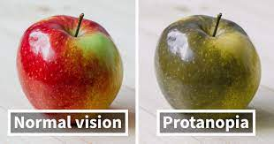

Red-green color blindness is split into two different types: Whereas people affected by protan color blindness are less sensitive to red light, deuteranopia or deuteranomly (the second type of red-green color blindness) is related to sensitiveness on green light.
Protans have either defective long-wavelength cones (L-cones) or the L-cones are missing at all. If they are missing it is called protanopia or sometimes red-dichromacy. Affected persons are dichromats because they have only two working cone types, short- and medium-wavelength, compared to persons with normal vision with three different cone types.
If the L-cones are defective they appear in different intensities. This results in either a stronger or a weaker color blindness. If L-cones are not missing but defective it is called protanomaly. People suffering from this kind of color blindness are called anomalous trichromats.

Protans have difficulties to distinguish between blue and green colors and also between red and green colors. When comparing the two spectrums you can see that there are different colors and shades of colors which are hard to distinguish for a protanopic person. So those persons are not only blind on red and green colors but a lot more. This means the well known term red-green color blindness is actually misleading and gives a wrong impression of protan color blindness (and also deutan color blindness).